<title>SquadMaker 시안 비교</title>
<link rel="preconnect" href="https://fonts.googleapis.com">
<link rel="preconnect" href="https://fonts.gstatic.com" crossorigin>
<link rel="stylesheet" href="https://fonts.googleapis.com/css2?family=IBM+Plex+Sans+KR:wght@400;500;700&display=swap">
<style>
/* Layout: one reading column; each concept is a full-width band with phone shots left, desktop shot right. */
:root {
  --bg: #f4f5f2; --surface: #ffffff; --fg: #18201b; --muted: #4c574f; --line: #d9ddd6;
  --accent: #1f6b45; --accent-ink: #ffffff; --warn: #8a4b00; --warn-bg: #fff3df;
  --a: #2b3a2f; --b: #b93a06; --c: #2f5bd9;
  --font: "IBM Plex Sans KR", "Malgun Gothic", "Apple SD Gothic Neo", "Noto Sans KR", system-ui, sans-serif;
  color-scheme: light;
}
@media (prefers-color-scheme: dark) { :root:not([data-theme="light"]) {
  --bg: #121614; --surface: #1b211d; --fg: #e8ece8; --muted: #a9b4ab; --line: #2e3731;
  --accent: #7fd1a3; --accent-ink: #0d1510; --warn: #ffc277; --warn-bg: #2d2416;
  --a: #b9d97a; --b: #ff8a50; --c: #8aa8ff; color-scheme: dark; } }
:root[data-theme="dark"] {
  --bg: #121614; --surface: #1b211d; --fg: #e8ece8; --muted: #a9b4ab; --line: #2e3731;
  --accent: #7fd1a3; --accent-ink: #0d1510; --warn: #ffc277; --warn-bg: #2d2416;
  --a: #b9d97a; --b: #ff8a50; --c: #8aa8ff; color-scheme: dark; }
* { box-sizing: border-box; }
body { background: var(--bg); color: var(--fg); font-family: var(--font); font-size: 16px; line-height: 1.65; margin: 0; }
.wrap { max-width: 1120px; margin: 0 auto; padding-inline: 20px; padding-block: 40px 64px; display: grid; gap: 48px; }
h1, h2, h3 { line-height: 1.3; text-wrap: balance; margin: 0; }
h1 { font-size: clamp(28px, 4vw, 40px); }
h2 { font-size: 26px; }
h3 { font-size: 18px; }
p { margin: 0; max-width: 68ch; }
.lead { display: grid; gap: 14px; }
.lead p { color: var(--muted); font-size: 17px; }
.notice { background: var(--warn-bg); color: var(--fg); border-radius: 12px; padding: 14px 16px; display: grid; gap: 4px; }
.notice strong { color: var(--warn); }
.concept { display: grid; gap: 18px; padding-top: 28px; border-top: 1px solid var(--line); }
.concept header { display: flex; flex-wrap: wrap; align-items: baseline; gap: 10px 16px; }
.tag { font-size: 13px; font-weight: 700; letter-spacing: .04em; padding: 2px 10px; border-radius: 999px; border: 1.5px solid currentColor; }
.concept[data-k="a"] .tag { color: var(--a); } .concept[data-k="b"] .tag { color: var(--b); } .concept[data-k="c"] .tag { color: var(--c); }
.open { margin-left: auto; display: inline-flex; align-items: center; min-height: 44px; padding: 0 18px; border-radius: 10px; background: var(--accent); color: var(--accent-ink); font-weight: 700; text-decoration: none; }
.open:focus-visible, a:focus-visible, button:focus-visible { outline: 3px solid var(--fg); outline-offset: 3px; }
.shots { display: grid; grid-template-columns: repeat(3, minmax(0, 180px)) minmax(0, 1fr); gap: 12px; align-items: start; }
figure { margin: 0; display: grid; gap: 6px; min-width: 0; }
figure img { width: 100%; height: auto; border-radius: 10px; border: 1px solid var(--line); display: block; background: var(--surface); }
figcaption { font-size: 13px; color: var(--muted); }
.pc { display: grid; grid-template-columns: 1fr 1fr; gap: 16px; }
.pc div { background: var(--surface); border-radius: 12px; padding: 16px 18px; display: grid; gap: 8px; align-content: start; }
.pc h4 { margin: 0; font-size: 15px; }
.pc ul { margin: 0; padding-left: 18px; display: grid; gap: 4px; }
.table-wrap { overflow-x: auto; background: var(--surface); border-radius: 12px; }
table { border-collapse: collapse; width: 100%; min-width: 640px; font-size: 15px; }
th, td { text-align: left; padding: 12px 14px; border-bottom: 1px solid var(--line); vertical-align: top; }
th { font-weight: 700; }
tbody tr:last-child td { border-bottom: 0; }
td.num { font-variant-numeric: tabular-nums; }
.rec { background: var(--surface); border-radius: 14px; padding: 22px 22px; display: grid; gap: 12px; border: 2px solid var(--accent); }
.list { display: grid; gap: 6px; padding-left: 20px; margin: 0; }
code { font-size: 14px; background: var(--surface); padding: 1px 6px; border-radius: 6px; }
pre { background: var(--surface); border-radius: 10px; padding: 14px 16px; overflow-x: auto; font-size: 14px; margin: 0; }
@media (max-width: 760px) {
  .shots { grid-template-columns: repeat(3, minmax(0, 1fr)); }
  .shots figure.desk { grid-column: 1 / -1; }
  .pc { grid-template-columns: 1fr; }
  .open { margin-left: 0; }
}
</style>

<main class="wrap">
  <section class="lead">
    <h1>SquadMaker 시안 비교</h1>
    <p>같은 데모 상태(우리 FC, 9v9, 3-3-2, 선수 9명, 전술 3개)로 만든 UX/UI 시안 세 가지입니다. 각 시안을 열어 선수 선택, 전술 단계 전환, 내보내기·공유 시트, 시안 상태(저장됨·처리 중·실패·되돌리기)를 직접 눌러 볼 수 있습니다.</p>
    <div class="notice" role="note">
      <strong>데모입니다</strong>
      <p>실제 저장, 다운로드, 공유, 광고, 결제, 계정, 분석은 연결하지 않았습니다. 화면 안의 "시안" 표시가 붙은 상태는 동작 예시입니다. 운영 앱(index.html)은 바뀌지 않았습니다.</p>
    </div>
  </section>

  <section class="concept" data-k="a" aria-labelledby="a-h">
    <header>
      <span class="tag">A</span>
      <h2 id="a-h">나이트피치</h2>
      <a class="open" href="../../../design-a/prototype.html" target="_blank" rel="noopener">시안 A 열기</a>
    </header>
    <p>지금의 다크 그린과 라임, Oswald 숫자를 다듬은 안입니다. 피치가 화면 대부분을 차지하고, 선수를 누르면 아래(모바일)나 오른쪽(데스크톱)에 편집 도구가 나타납니다.</p>
    <div class="shots">
      <figure>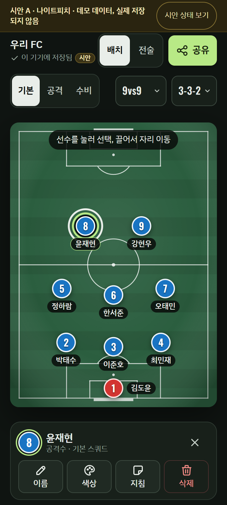<figcaption>360×800 선수 선택</figcaption></figure>
      <figure>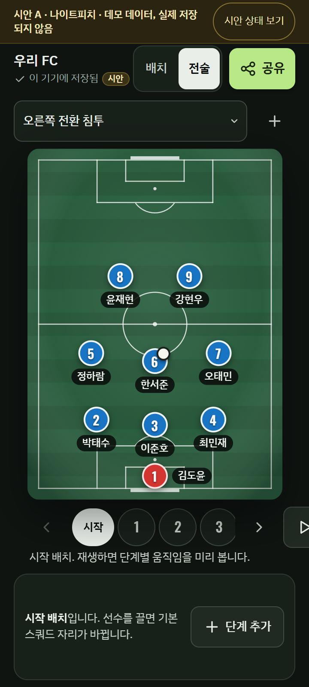<figcaption>360×800 전술</figcaption></figure>
      <figure>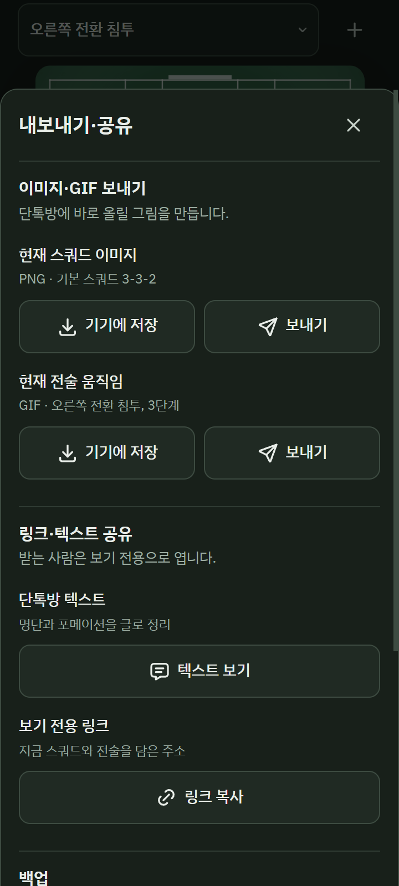<figcaption>360×800 내보내기·공유</figcaption></figure>
      <figure class="desk">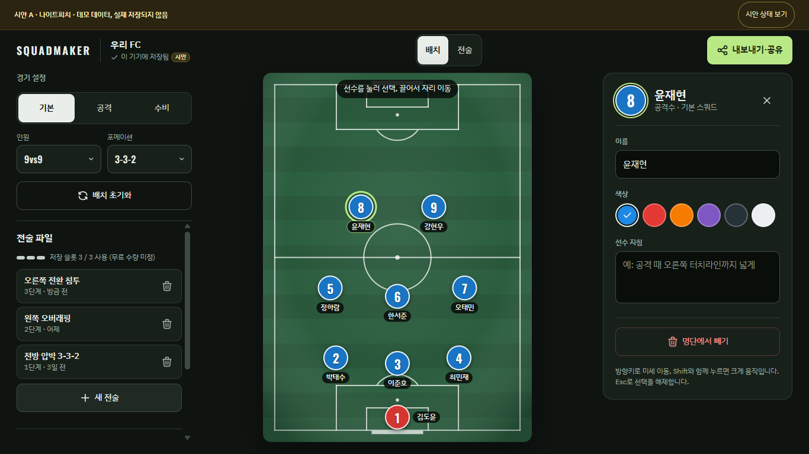<figcaption>1366×768 선수 선택</figcaption></figure>
    </div>
    <div class="pc">
      <div><h4>장점</h4><ul>
        <li>기존 사용자가 바로 알아본다. 현재 코드의 토큰과 구조를 이어 쓸 수 있어 전환 위험이 가장 작다.</li>
        <li>모바일 피치가 가장 크다(폭 약 328px). 선택 전에는 도구가 숨어 있어 화면이 조용하다.</li>
        <li>라임을 주 행동과 선택 표시에만 써서 지금보다 위계가 분명하다.</li>
      </ul></div>
      <div><h4>단점</h4><ul>
        <li>다크 화면이라 한낮 운동장 햇빛 아래 가독성은 B보다 불리하다(실기기 미확인).</li>
        <li>전술 파일 목록과 슬롯 표시가 모바일 첫 화면 아래에 있어 슬롯 개념이 덜 드러난다.</li>
        <li>처음 쓰는 사람에게 "선수를 눌러라" 외의 단계 안내는 약하다.</li>
      </ul></div>
    </div>
  </section>

  <section class="concept" data-k="b" aria-labelledby="b-h">
    <header>
      <span class="tag">B</span>
      <h2 id="b-h">데이라이트코치</h2>
      <a class="open" href="concept-02/index.html" target="_blank" rel="noopener">시안 B 열기</a>
    </header>
    <p>밝은 고대비 화면에 큰 글자를 쓰고, 선수 → 배치 → 움직임 세 단계를 하단 막대의 "다음"으로 따라가게 만든 안입니다. 강조색은 신호 주황 하나입니다.</p>
    <div class="shots">
      <figure>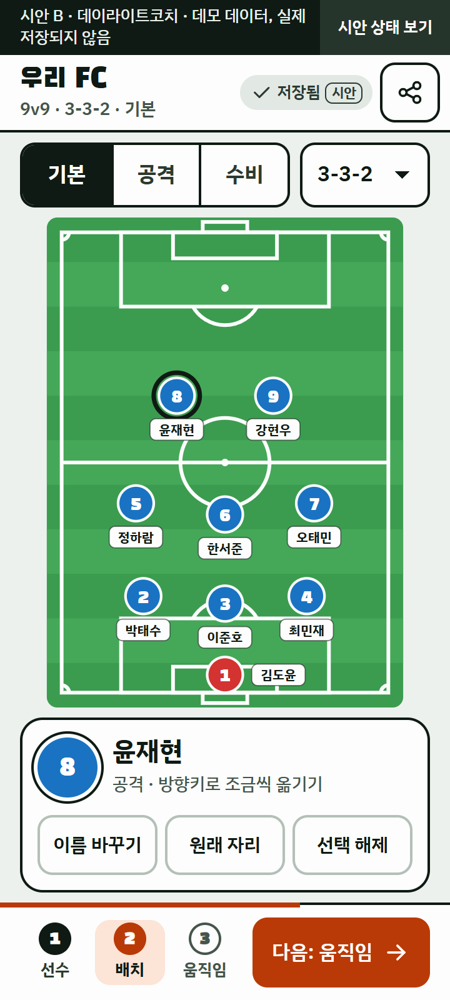<figcaption>360×800 배치 단계 선택</figcaption></figure>
      <figure>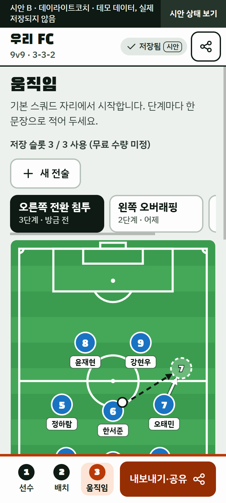<figcaption>360×800 움직임 단계</figcaption></figure>
      <figure>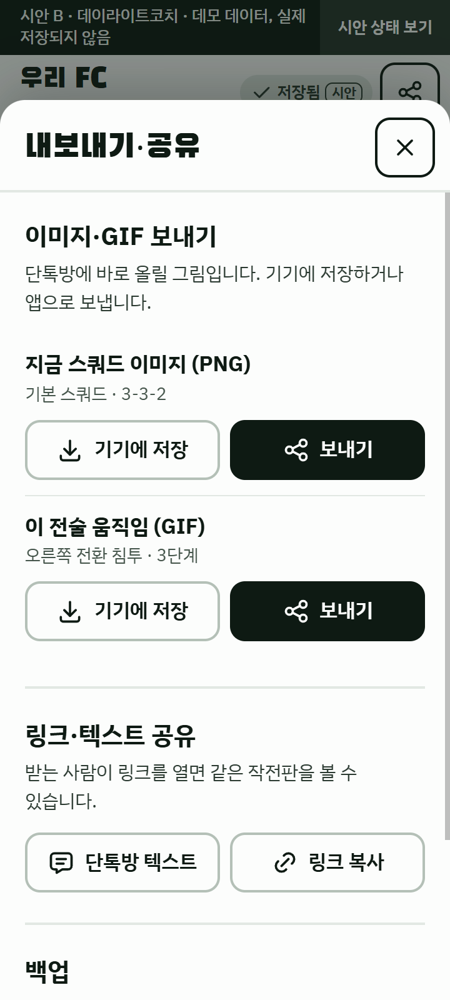<figcaption>360×800 내보내기·공유</figcaption></figure>
      <figure class="desk">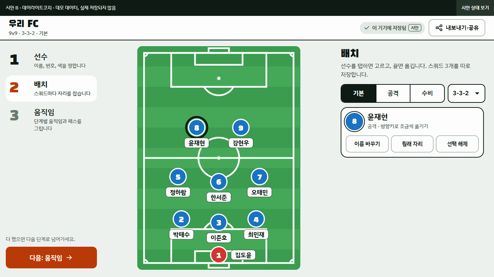<figcaption>1366×768 배치 단계 선택</figcaption></figure>
    </div>
    <div class="pc">
      <div><h4>장점</h4><ul>
        <li>글자가 가장 크고 대비가 높다. 야외에서 한 손으로 쓰는 장면에 가장 맞는다.</li>
        <li>처음 쓰는 사람이 무엇부터 할지 바로 안다. 전술 단계를 문장 목록으로 보여 줘 이해가 쉽다.</li>
        <li>내보내기 결과 화면에만 광고 자리를 둬서 편집 중 광고 노출이 없다.</li>
      </ul></div>
      <div><h4>단점</h4><ul>
        <li>단계를 나눈 만큼 숙련 사용자는 한 화면에서 끝내기 어렵다.</li>
        <li>현재 앱의 정보 구조(스쿼드·전술 패턴·매치 전략 탭)를 다시 짜야 해 구현 범위가 크다.</li>
        <li>전술 파일·슬롯 개념은 움직임 단계 안쪽에 있어 덜 보인다.</li>
        <li>360×800 움직임 단계에서는 설명·슬롯·파일 목록이 위에 있어 피치 아래쪽을 보려면 스크롤해야 한다.</li>
      </ul></div>
    </div>
  </section>

  <section class="concept" data-k="c" aria-labelledby="c-h">
    <header>
      <span class="tag">C</span>
      <h2 id="c-h">택틱스스튜디오</h2>
      <a class="open" href="concept-03/index.html" target="_blank" rel="noopener">시안 C 열기</a>
    </header>
    <p>네이비와 코발트를 쓴 편집 도구형 안입니다. 팀 = 프로젝트, 전술 = 파일 구조를 그대로 보여 주고, 피치 아래 키프레임 타임라인으로 단계를 편집합니다.</p>
    <div class="shots">
      <figure>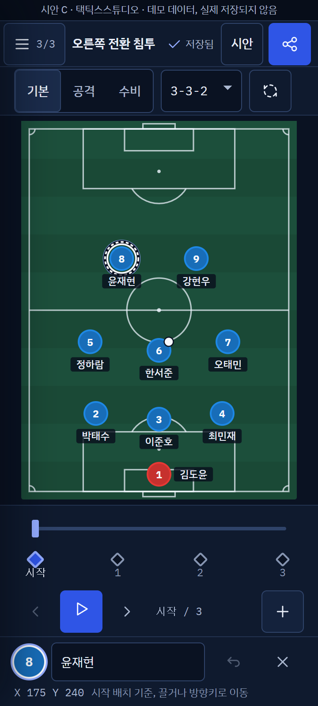<figcaption>360×800 선수 선택</figcaption></figure>
      <figure>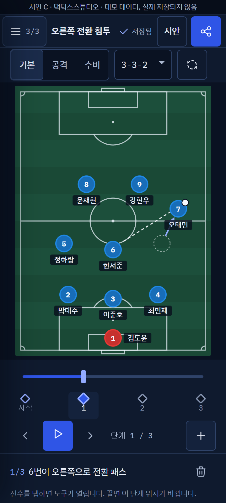<figcaption>360×800 단계 1</figcaption></figure>
      <figure>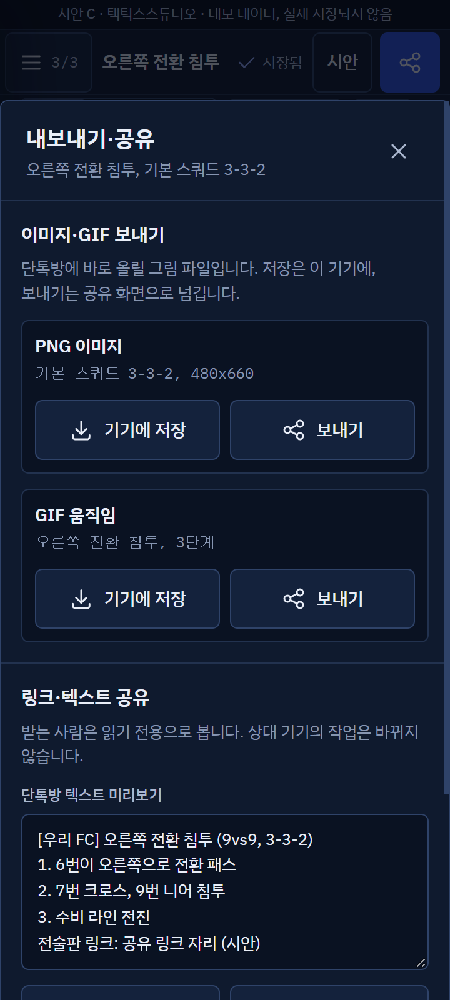<figcaption>360×800 내보내기·공유</figcaption></figure>
      <figure class="desk">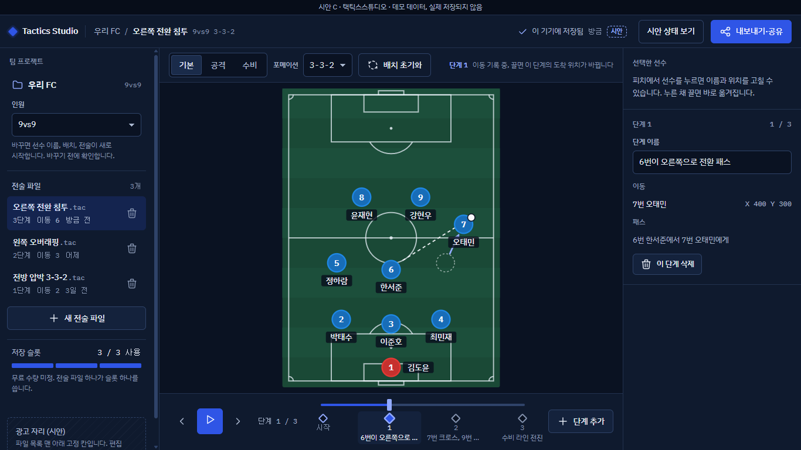<figcaption>1366×768 단계 1 편집</figcaption></figure>
    </div>
    <div class="pc">
      <div><h4>장점</h4><ul>
        <li>저장 슬롯과 전술 파일이 항상 보여 수익 모델(슬롯 확장)과 2차 팀 공간으로 이어지기 쉽다.</li>
        <li>타임라인으로 단계 이동·재생·추가가 한 줄에 모여 전술을 자주 만드는 사람에게 빠르다.</li>
        <li>데스크톱 3단 구성이 1366×768에 스크롤 없이 들어간다.</li>
      </ul></div>
      <div><h4>단점</h4><ul>
        <li>모바일에서 타임라인이 높이를 많이 써서 피치가 A보다 작다(폭 약 312px).</li>
        <li>정보 밀도가 높아 조기축구 일반 사용자에게는 배워야 할 것이 많다.</li>
        <li>현재 앱과 화면 구조가 가장 달라 구현과 검증 범위가 가장 크다.</li>
      </ul></div>
    </div>
  </section>

  <section class="concept" aria-labelledby="cmp-h">
    <h2 id="cmp-h">비교 기준</h2>
    <div class="table-wrap">
      <table>
        <thead><tr><th scope="col">기준</th><th scope="col">A 나이트피치</th><th scope="col">B 데이라이트코치</th><th scope="col">C 택틱스스튜디오</th></tr></thead>
        <tbody>
          <tr><th scope="row">모바일 피치 크기(360×800)</th><td>가장 큼</td><td>중간</td><td>가장 작음</td></tr>
          <tr><th scope="row">처음 쓰는 사람의 이해</th><td>보통</td><td>가장 쉬움</td><td>배울 것이 많음</td></tr>
          <tr><th scope="row">야외 가독성</th><td>보통(다크)</td><td>가장 좋음</td><td>보통(다크)</td></tr>
          <tr><th scope="row">슬롯·전술 파일 모델 표현</th><td>보통</td><td>약함</td><td>가장 강함</td></tr>
          <tr><th scope="row">현재 정체성 유지</th><td>가장 높음</td><td>낮음</td><td>낮음</td></tr>
          <tr><th scope="row">현재 코드에서 옮기는 범위</th><td>가장 작음</td><td>큼(정보 구조 변경)</td><td>가장 큼</td></tr>
        </tbody>
      </table>
    </div>
    <p>이 표는 시안 화면과 구조를 비교한 판단입니다. 사용자 테스트나 실기기 측정 결과가 아닙니다.</p>
  </section>

  <section class="concept" aria-labelledby="chk-h">
    <h2 id="chk-h">렌더링 점검 결과</h2>
    <p>Playwright로 띄운 Chromium에서 360×800(터치 에뮬레이션, Android 실기기 아님)과 1366×768을 렌더링해 스크립트로 측정했습니다.</p>
    <div class="table-wrap">
      <table>
        <thead><tr><th scope="col">항목</th><th scope="col">A</th><th scope="col">B</th><th scope="col">C</th></tr></thead>
        <tbody id="chk-body">
          <tr><th scope="row">360px 가로 넘침</th><td class="num">0px</td><td class="num">0px</td><td class="num">0px</td></tr>
          <tr><th scope="row">360×800에서 피치와 선택 도구 동시 노출</th><td>예</td><td>예(배치 단계)</td><td>예</td></tr>
          <tr><th scope="row">1366×768에서 피치와 선택 도구 동시 노출</th><td>예</td><td>예</td><td>예</td></tr>
          <tr><th scope="row">AA 대비 미달 텍스트</th><td class="num">0건</td><td class="num">0건</td><td class="num">0건</td></tr>
          <tr><th scope="row">모바일 48px 미만 조작 요소</th><td>기본·공격·수비 44px 폭, 상태 보기 44px 높이</td><td>상태 보기 44px 높이</td><td>타임라인 단계 버튼 44px 높이</td></tr>
          <tr><th scope="row">키보드 포커스 표시</th><td>보임</td><td>보임</td><td>보임(선수 토큰은 점선 링)</td></tr>
          <tr><th scope="row">탭으로 선수 선택(터치 에뮬레이션)</th><td>됨</td><td>됨</td><td>됨</td></tr>
          <tr><th scope="row">스크립트 오류</th><td class="num">0건</td><td class="num">0건</td><td class="num">0건</td></tr>
        </tbody>
      </table>
    </div>
    <h3>검증하지 못한 것</h3>
    <ul class="list">
      <li>실제 Android 기기의 터치, 소프트 키보드, 햇빛 아래 가독성</li>
      <li>스크린리더(TalkBack) 실사용. ARIA 속성과 포커스 이동만 확인했습니다</li>
      <li>각 시안의 모든 상태 조합. 대표 화면(선택, 전술, 공유 시트)과 상태 메뉴 존재만 확인했습니다</li>
      <li>사용자 테스트. 비교 표의 판단은 화면 검토에 근거합니다</li>
    </ul>
  </section>

  <section class="rec" aria-labelledby="rec-h">
    <h2 id="rec-h">추천: A 나이트피치</h2>
    <p>1차 출시 목표(로그인 없이 편집, 기기 저장, 이미지·GIF 공유)에 가장 가까운 안입니다. 현재 코드와 정체성을 이어 써서 데이터 보호(1단계)와 공유 동선(2단계)을 먼저 끝내고 테마를 적용하는 계획 순서와 잘 맞고, 모바일 피치도 가장 큽니다.</p>
    <p>A로 갈 때 함께 검토할 점: 야외 가독성이 걱정되면 B의 큰 라벨과 고대비 처리를 A의 피치에 옮기고, 슬롯이 정해지면 C처럼 전술 파일 목록을 한 번에 열 수 있는 진입점을 둡니다. 실기기에서 햇빛 가독성을 확인하기 전에는 B를 탈락시키지 않는 편이 안전합니다.</p>
  </section>

  <section class="concept" aria-labelledby="run-h">
    <h2 id="run-h">로컬 실행 방법</h2>
    <p>저장소의 <code>docs/ux-redesign-20261007/claude/</code>에 있습니다. 각 시안은 외부 스크립트 없는 단일 HTML이라 파일을 브라우저로 바로 열어도 됩니다. 비교 페이지까지 함께 보려면 정적 서버를 띄웁니다.</p>
    <pre>cd docs/ux-redesign-20261007/claude
python -m http.server 8765
# http://127.0.0.1:8765/concept-01/index.html</pre>
  </section>
</main>
